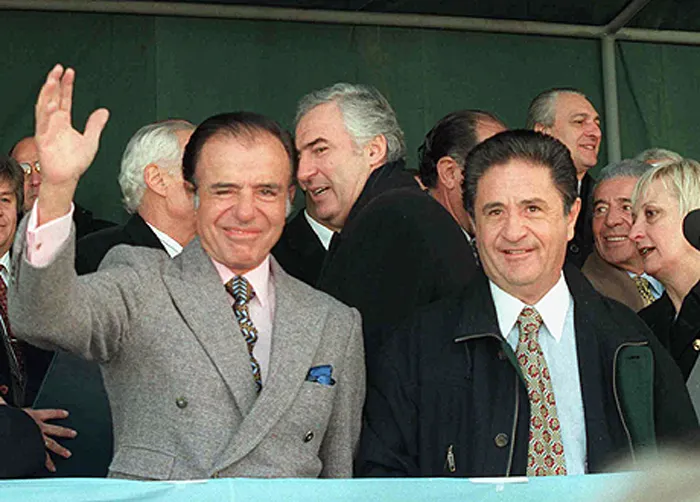

Sus padres, Saúl Menem y Mohibe Akil, eran inmigrantes sirios de religión musulmana provenientes de la ciudad de Yabrud. Se asentaron en La Rioja a principios del siglo XX, integrándose a la comunidad local como comerciantes. Carlos fue el mayor de seis hermanos. Su hermano Eduardo Menem también tendría una larga carrera política, llegando a ser senador y presidente provisional del Senado.
Creció en un ambiente rural y humilde. La Rioja era entonces una de las provincias más pobres del país, lo que marcaría su discurso político de reivindicación de las regiones del interior frente al centralismo porteño.

Estudió Derecho en la Universidad Nacional de Córdoba, donde se graduó en 1955 y comenzó su militancia peronista.